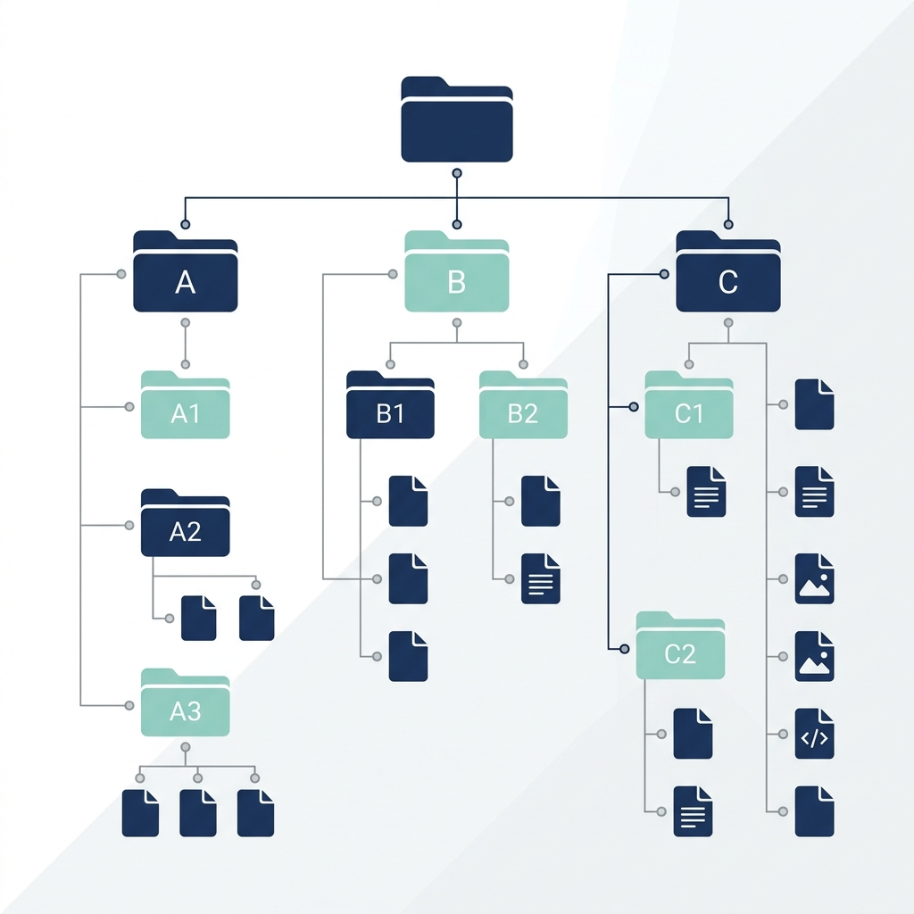

Desarrollo soluciones de automatización a medida con Python y Google Scripts. Conecta tus sistemas, elimina fallas operativas y libera a tu equipo para lo verdaderamente estratégico.
Hacer tareas repetitivas a mano no solo frena el crecimiento de tu empresa, sino que introduce ineficiencias críticas.
Tu equipo invierte horas valiosas copiando y pegando información entre planillas de cálculo Excel, bases de datos o sistemas de gestión internos.
Los procesos manuales son propensos a equivocaciones humanas inevitables en la carga de datos, lo que afecta directamente el control de costos y la toma de decisiones.
Los cuellos de botella administrativos ralentizan la entrega de documentación e impiden que el personal se enfoque en tareas de innovación o ventas.
Ejemplos reales de procesos manuales complejos y lentos que fueron transformados en flujos de trabajo autónomos, seguros y eficientes.
Migración de planillas tradicionales a un sistema centralizado inter-áreas. Conectamos la información de distintos departamentos en tiempo real bajo una base de datos segura y una interfaz ágil. Se eliminaron procesos manuales redundantes y se agilizó el flujo de comunicación.
Digitalización total de procesos, eliminación del papel, trazabilidad absoluta y reducción del tiempo de consulta interna a segundos.

Generador automático de estructuras de almacenamiento. Software a medida que procesa listados de texto o extrae datos desde capturas de pantalla para estructurar y crear cientos de directorios de clientes organizados al instante.
Recuperación de decenas de horas mensuales de trabajo administrativo rutinario. Estandarización total y prolijidad en el almacenamiento.
Compilador inteligente de expedientes PDF. Sistema que automatiza el ensamblaje, ordenamiento y numeración de archivos. Cuenta con un motor de validación lógica para comprobar la existencia de documentos requeridos (como facturas) antes de cerrar el expediente.
100% de precisión y control en la preparación de expedientes oficiales entregados a clientes, reduciendo auditorías o devoluciones por errores humanos.
Soy Leandro Sesto, programador de agentes de automatización utilizando Python y las herramientas del ecosistema Google (Sheets, Drive, Apps Script). Mi enfoque está orientado 100% al valor empresarial: me concentro en analizar y modelar procesos para eliminar la ineficiencia, transformándolos en flujos autónomos que le devuelven tiempo productivo a tu equipo.
Conversemos durante 15 minutos para analizar qué tarea manual te está consumiendo tiempo. Evaluaré tu proceso y te propondré la mejor arquitectura técnica para automatizarlo de forma escalable.